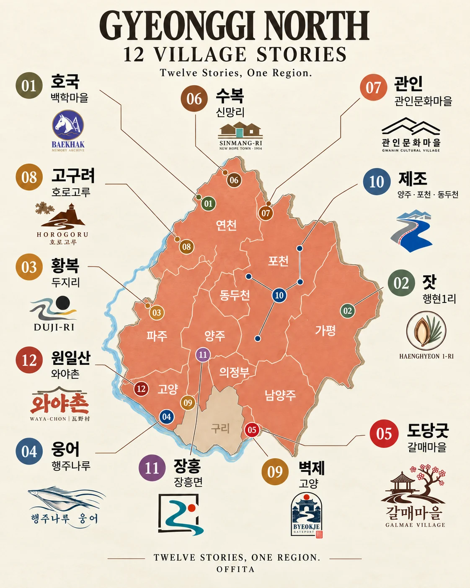

GYEONGGI NORTH · VISUAL ARCHIVE
Twelve places
One region.
경기북부, 열두 개의 지역.
저마다의 이야기를 가진 곳.
지역의 사람과 기억, 생업과 풍경을 하나의 앨범처럼 펼칩니다. 그림에서 시작해 지역의 이야기를 읽고, 음악으로 이어지는 프로젝트입니다.
12개 이야기 살펴보기
12 STORIES · ONE REGION GYEONGGI NORTH MAP ↗
이미 그곳에 있는 새로운 방문의 이유를 발견합니다.DISCOVER · INTERPRET · CREATE
AN OFFITA ORIGINAL PROJECT
The 12 Tracks.
각기 다른 역사와 생활문화를 가진 열두 개의 지역 앨범.
상세 이야기 8개작품 미리보기 4개그림을 눌러 공개된 내용을 살펴보세요. 음악 공개 상태는 각 상세 페이지에서 확인할 수 있습니다.
12개 표시 · 상세 이야기 8개 · 작품 미리보기 4개
검색 조건에 맞는 지역이 없습니다.